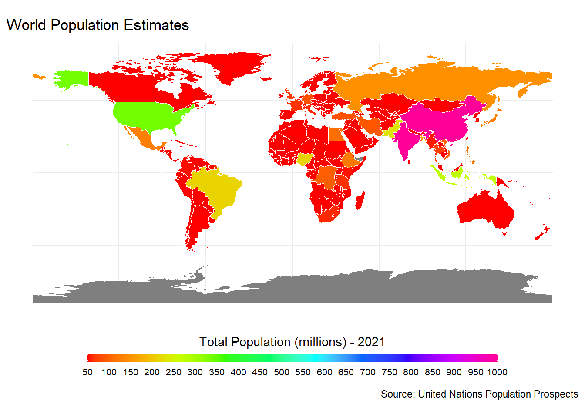
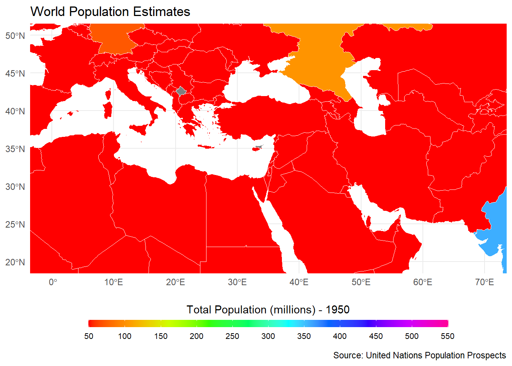
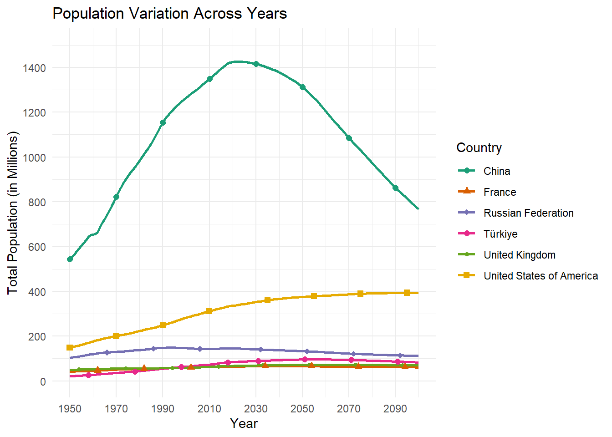

In order to start coding for our project we need to load the necessary libraries for the project, including data manipulation (tidyverse, dplyr, purrr), data visualization (ggplot2), and data cleaning (janitor).
library(tidyverse) # Comprehensive data manipulation and visualization tools
── Attaching core tidyverse packages ──────────────────────── tidyverse 2.0.0 ──
✔ dplyr 1.1.3 ✔ readr 2.1.4
✔ forcats 1.0.0 ✔ stringr 1.5.0
✔ ggplot2 3.4.3 ✔ tibble 3.2.1
✔ lubridate 1.9.3 ✔ tidyr 1.3.0
✔ purrr 1.0.2
── Conflicts ────────────────────────────────────────── tidyverse_conflicts() ──
✖ dplyr::filter() masks stats::filter()
✖ dplyr::lag() masks stats::lag()
ℹ Use the conflicted package (<http://conflicted.r-lib.org/>) to force all conflicts to become errors
library(readxl) # Reading Excel files into Rlibrary(curl) # Downloading files from the internet
Warning: package 'curl' was built under R version 4.3.2
Using libcurl 8.3.0 with Schannel
Attaching package: 'curl'
The following object is masked from 'package:readr':
parse_date
library(dplyr) # Data manipulation toolkitlibrary(purrr) # Functional programming toolslibrary(stringr) # String manipulation functionslibrary(janitor) # Tools for data cleaning
Attaching package: 'janitor'
The following objects are masked from 'package:stats':
chisq.test, fisher.test
library(ggplot2) # Data visualization using Grammar of Graphics
The demographic data is obtained from an Excel file accessible via a specified URL. The file is downloaded utilizing the curl_download function, and the sheets of interest are identified.
# Specify the web address of the Excel fileurl <-"https://population.un.org/wpp/Download/Files/1_Indicators%20(Standard)/EXCEL_FILES/1_General/WPP2022_GEN_F01_DEMOGRAPHIC_INDICATORS_COMPACT_REV1.xlsx"data <-"WPP2022_GEN_F01_DEMOGRAPHIC_INDICATORS_COMPACT_REV1.xlsx"curl_download(url, destfile = data)
Read_clean, a custom function, is utilized to extract and clear data from individual sheets. Using clean_names and map_df, the final data is combined into a single data frame and standardized column names are established.
# Downloaded sheetssheets <-excel_sheets(data)# Select the first two sheetsselected_sheets <- sheets[1:2]# Function to read and clean data from a sheetread_clean <-function(file_path, sheet) {read_excel(file_path, sheet = sheet, skip =16, col_types ="text")}# Read and clean selected sheets, then bind them into a single data frameraw_data <-map_df(selected_sheets, ~read_clean(data, .)) |>clean_names()
In this stage, we filter out rows with a specific type (‘Label/Separator’).
# Creating a new DataFrame without rows where 'type' is 'Label/Separator'raw_data_wo_ls <-subset(raw_data, type !="Label/Separator")
We also convert population columns to numeric format and calculate the rate of change between January 1 and July 1 populations. The resulting data frame, sorted_data, is organized by year for further analysis.
raw_data_wo_ls$total_population_as_of_1_january_thousands <-as.numeric(raw_data_wo_ls$total_population_as_of_1_january_thousands)raw_data_wo_ls$total_population_as_of_1_july_thousands <-as.numeric(raw_data_wo_ls$total_population_as_of_1_july_thousands)# Group by year and arrange by yearsorted_data <- raw_data_wo_ls |>mutate(rate_of_change = ((total_population_as_of_1_january_thousands - total_population_as_of_1_july_thousands) / total_population_as_of_1_january_thousands) *100) |>select(rate_of_change, everything()) |>group_by(year) |>arrange(year) |>ungroup()
To visually explore the variation in the total population rate of change over the years, we use the ggplot2 package. A scatter plot is created according to years.
# Create a ggplot with the specified columnsggplot(sorted_data, aes(x = year, y = rate_of_change)) +geom_point() +scale_y_continuous(name ="Population Rate of Change (%)", limits =c(0, 100))+labs(title ="Variation of Total Population between 1 Jan to 1 July Over Years") +theme_minimal()+scale_x_discrete(breaks =seq(1950, 2100, by =10))
After an in-depth examination of the percentage variation in populations between January 1 and July 1, it became apparent that, aside from a few outliers, the rate of change across the six time periods is not significantly pronounced. In light of this observation, we proceeded with a data reduction process to streamline our dataset for a more focused analysis. This involved excluding specific columns that were deemed unnecessary for our current analytical objectives.
This reduction aimed to simplify the dataset, making it more manageable for subsequent analyses while retaining the essential information for our research
# Creating a new DataFrame without specific columnsraw_data_reduced <- raw_data_wo_ls |>select(-contains("_as_of_1_january"), -index,-iso2_alpha_code,-sdmx_code,-parent_code,-notes,-location_code )total_na_count <-sum(is.na(raw_data_reduced))print(total_na_count)
[1] 7399
Upon initial analysis, the results of the total_na_count indicated the absence of any missing values. However, during the exploration of the scatter plot, a warning surfaced, indicating the presence of rows with missing values. This discrepancy prompted a closer examination of the data quality.
Further investigation revealed that the missing values were not explicitly defined as ‘NA.’ Instead, an unconventional placeholder, represented by three dots (“…”), was used to indicate missing data in the initial untidy dataset.
To rectify this issue, we took a two-step approach:
Replacing “…” with NA: All occurrences of the three dots (“…”) in the dataset were replaced with the standard ‘NA’ representation. This step was crucial for ensuring uniformity and accuracy in identifying missing values across the dataset.
Conversion to Numeric: Subsequently, we converted all related columns with numerical values from character (string) to numeric format. This conversion ensured that the data, now with consistent missing value representation, could be accurately processed and analyzed.
We filter the data by level, including Country/Area, Sub-Region, Region, Development Group, and Income Group, in order to conduct a more comprehensive analysis. A distinct data frame is utilized to maintain each filtered dataset, which facilitates targeted analyses of particular demographic categories.
# Filtering and Creating New Columns for Country/Area Level:country_area_level_filtered <- raw_data_rounded |>filter(type =="Country/Area") |>mutate(country_and_area = region_subregion_country_or_area) |>select(-region_subregion_country_or_area) |>relocate("country_and_area", .after ="variant")# The data is filtered to include only entries with the type "Country/Area."# A new column 'country_and_area' is created, containing information from 'region_subregion_country_or_area.'# Unnecessary columns are deselected, and 'country_and_area' is relocated after the 'variant' column.# Filtering and Creating New Columns for Sub-Region Level:sub_region_level_filtered <- raw_data_rounded |>filter(str_detect(type, regex("region", ignore_case =FALSE))) |>mutate(sub_region = region_subregion_country_or_area) |>select(-region_subregion_country_or_area) |>relocate("sub_region", .after ="variant")# Filtering and Creating New Columns for Region Level:region_level_filtered <- raw_data_rounded |>filter(str_detect(type, regex("Region|World", ignore_case =FALSE))) |>mutate(region = region_subregion_country_or_area) |>select(-region_subregion_country_or_area) |>relocate("region", .after ="variant")# Filtering and Creating New Columns for Development Group Level:development_group_level_filtered <- raw_data_rounded |>filter(str_detect(type, regex("Development Group", ignore_case =FALSE))) |>mutate(development_group = region_subregion_country_or_area) |>select(-region_subregion_country_or_area) |>relocate("development_group", .after ="variant")# Filtering and Creating New Columns for Income Group Level:income_group_level_filtered <- raw_data_rounded |>filter(str_detect(type, regex("Income Group", ignore_case =FALSE))) |>mutate(income_group = region_subregion_country_or_area) |>select(-region_subregion_country_or_area) |>relocate("income_group", .after ="variant")
Warning: package 'sf' was built under R version 4.3.2
Linking to GEOS 3.11.2, GDAL 3.7.2, PROJ 9.3.0; sf_use_s2() is TRUE
library(rnaturalearth)
Warning: package 'rnaturalearth' was built under R version 4.3.2
library(rnaturalearthdata)
Warning: package 'rnaturalearthdata' was built under R version 4.3.2
Attaching package: 'rnaturalearthdata'
The following object is masked from 'package:rnaturalearth':
countries110
library(dplyr)
but in thousands it seems liitle bit weird because we can see all contries in the color scale.
# Replace 'your_year' with the specific year you want to map (e.g., 2021)your_year <-2021# Filter the data frame for the specific yearfiltered_data <- country_area_level_filtered |>filter(year == your_year) |>mutate(total_population_in_millions = (total_population_as_of_1_july_thousands *1000) /1000000)# Load world map dataworld <-ne_countries(scale ="medium", returnclass ="sf")# Merge world map data with population dataworld_population <-merge(world, filtered_data, by.x ="iso_a3", by.y ="iso3_alpha_code", all.x =TRUE)# Set custom limits and breaks for the color scalecustom_limits <-c(50, 1000)custom_breaks <-seq(50, 1000, by =50)# Create the ggplot world mapggplot(world_population) +geom_sf(aes(fill = total_population_in_millions), color ="white", size =0.2) +scale_fill_gradientn(name =paste("Total Population (millions) -", your_year), colors =rainbow(10),limits = custom_limits,oob = scales::squish,breaks = custom_breaks) +labs(title ="World Population Estimates",caption ="Source: United Nations Population Prospects") +guides(fill =guide_colorbar(title.position ="top", keywidth =2, keyheight =10, label.position ="bottom", label.theme =element_text(size =8))) +theme_minimal() +theme(legend.position ="bottom", # Position the legend at the bottomlegend.box ="horizontal", # Arrange the legend items horizontallylegend.direction ="horizontal", # Display the legend items horizontallylegend.title.align =0.5, # Center the legend titlelegend.key.size =unit(0.25, "cm"),legend.key.width =unit(2.5, "cm"))

zoom in to turkey to investigate population estimation in 1950
# Replace 'your_year' with the specific year you want to map (e.g., 1950)your_year <-1950# Filter the data frame for the specific yearfiltered_data <- country_area_level_filtered |>filter(year == your_year) |>mutate(total_population_in_millions = (total_population_as_of_1_july_thousands *1000) /1000000)# Load world map dataworld <-ne_countries(scale ="medium", returnclass ="sf")# Merge world map data with population dataworld_population <-merge(world, filtered_data, by.x ="iso_a3", by.y ="iso3_alpha_code", all.x =TRUE)# Set custom limits and breaks for the color scalecustom_limits <-c(50, 550)custom_breaks <-seq(50, 550, by =50)# Create the ggplot world mapggplot(world_population) +geom_sf(aes(fill = total_population_in_millions), color ="white", size =0.2) +scale_fill_gradientn(name =paste("Total Population (millions) -", your_year), colors =rainbow(10),limits = custom_limits,oob = scales::squish,breaks = custom_breaks) +labs(title ="World Population Estimates",caption ="Source: United Nations Population Prospects") +guides(fill =guide_colorbar(title.position ="top", keywidth =2, keyheight =10, label.position ="bottom", label.theme =element_text(size =8))) +theme_minimal() +theme(legend.position ="bottom", # Position the legend at the bottomlegend.box ="horizontal", # Arrange the legend items horizontallylegend.direction ="horizontal", # Display the legend items horizontallylegend.title.align =0.5, # Center the legend titlelegend.key.size =unit(0.25, "cm"),legend.key.width =unit(2.5, "cm"))+coord_sf( xlim =c(0, 70), ylim =c(20, 50)) # Adjust xlim and ylim for the desired region

or we can observe total population variation across years for spesific countries
# Select specific countries to visualizeselected_countries <-c("Türkiye", "China", "United States of America", "Russian Federation", "United Kingdom", "France")filtered_data <- country_area_level_filtered |>filter(country_and_area %in% selected_countries) |>mutate(total_population_in_millions = (total_population_as_of_1_july_thousands *1000) /1000000)# Create a line plot with markers for each countryggplot(filtered_data, aes(x = year, y = total_population_in_millions, group = country_and_area, color = country_and_area, shape = country_and_area)) +geom_line(size =1) +geom_point(size =2, data = filtered_data |>filter(row_number() %%20==1)) +labs(title ="Population Variation Across Years",x ="Year",y ="Total Population (in Millions)",color ="Country",shape ="Country") +theme_minimal() +scale_color_brewer(palette="Dark2") +scale_shape_manual(values =c(16, 17, 18, 19, 20, 15)) +guides(color =guide_legend(title ="Country")) +scale_x_continuous(limits =c(1950, 2100), breaks =seq(1950, 2100, by =20)) +scale_y_continuous(limits =c(0, 1500), breaks =seq(0, 1500, by =200))
Warning: Using `size` aesthetic for lines was deprecated in ggplot2 3.4.0.
ℹ Please use `linewidth` instead.

library(ggplot2)# Select a specific country to visualizeselected_country <-"Türkiye"filtered_data <- country_area_level_filtered |>filter(country_and_area == selected_country)# Create a pyramid plotggplot(filtered_data, aes(x = year, y = births_thousands, fill ="Births")) +geom_bar(stat ="identity", position ="identity", width =0.7) +geom_bar(aes(x = year, y =-total_deaths_thousands, fill ="Deaths"), stat ="identity", position ="identity", width =0.7) +scale_y_continuous(labels = abs) +# Use positive values for labelslabs(title =paste("Birth and Death Rate Comparison for", selected_country),x ="Year",y ="Count (in Thousands)",fill ="Type") +theme_minimal() +theme(axis.text.y =element_blank(), # Hide y-axis labelsaxis.ticks.y =element_blank(), # Hide y-axis tickslegend.title =element_blank(), # Hide legend titlelegend.position ="bottom") +# Move legend to the bottomscale_x_continuous(breaks =seq(1950, 2100, by =20)) # Set custom breaks for the x-axis